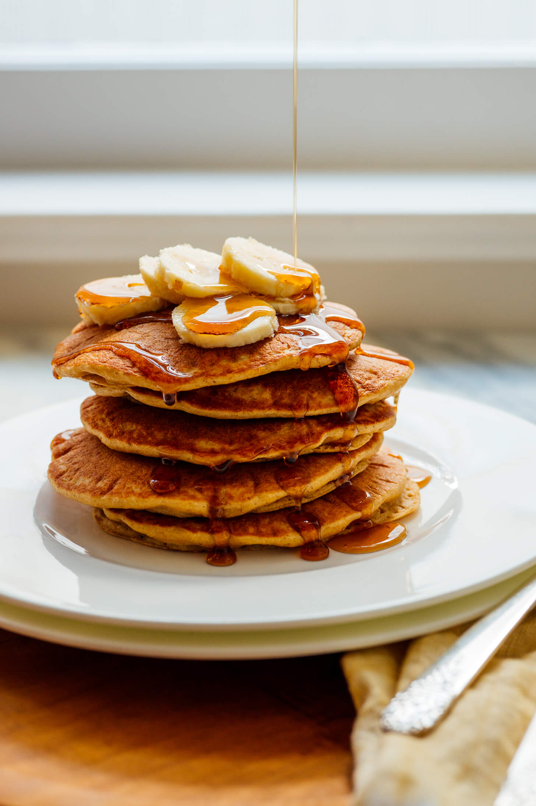

Oatmeal-Almond Protein Pancakes

Description
Depending on the type of protein powder you pick, you might need to reduce the amount of liquid in this protein pancake recipe. Whey-protein pancakes need less liquid than those made with soy, hemp or pea protein. Serve with yogurt and a DIY fruit sauce (warmed frozen berries with a pinch of sugar).
Ingredients
- ½ cup unflavored protein powder
- ½ cup almond meal
- ½ cup oat flour (see Tip)
- 1 tablespoon sugar
- 1 teaspoon ground cinnamon
- 1 teaspoon baking powder
- ¼ teaspoon baking soda
- ¼ teaspoon salt
- 2 large eggs
- ¾ cup buttermilk
- 2 tablespoons canola oil
- 2 teaspoons vanilla extract
Steps
- Step 1.
Combine protein powder, almond meal, oat flour, sugar, cinnamon, baking powder, baking soda and salt in a blender; pulse until fully mixed. Add eggs, buttermilk (reduce to 1/2 cup if using whey protein), oil and vanilla; pulse, stopping to scrape down the sides as needed, until combined. Let stand for 15 minutes.
- Step 2.
Coat a large nonstick skillet or griddle with cooking spray; heat over medium-high heat.
- Step 3.
Make about 3 pancakes at a time, using 1/4 cup batter per pancake; reduce the heat to medium. Cook until the edges are dry, 1 to 3 minutes. Flip and cook until golden brown on the other side, 1 to 3 minutes more. Repeat with the remaining batter, using more cooking spray and reducing the heat as needed. Serve warm.